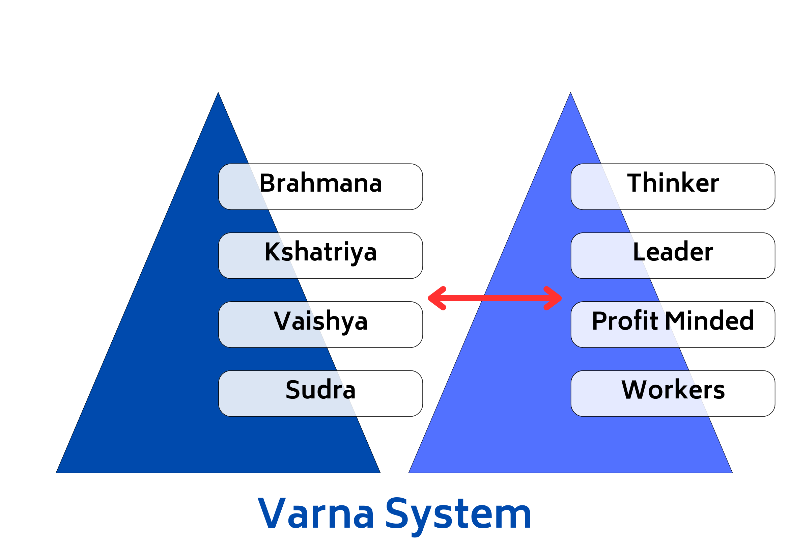
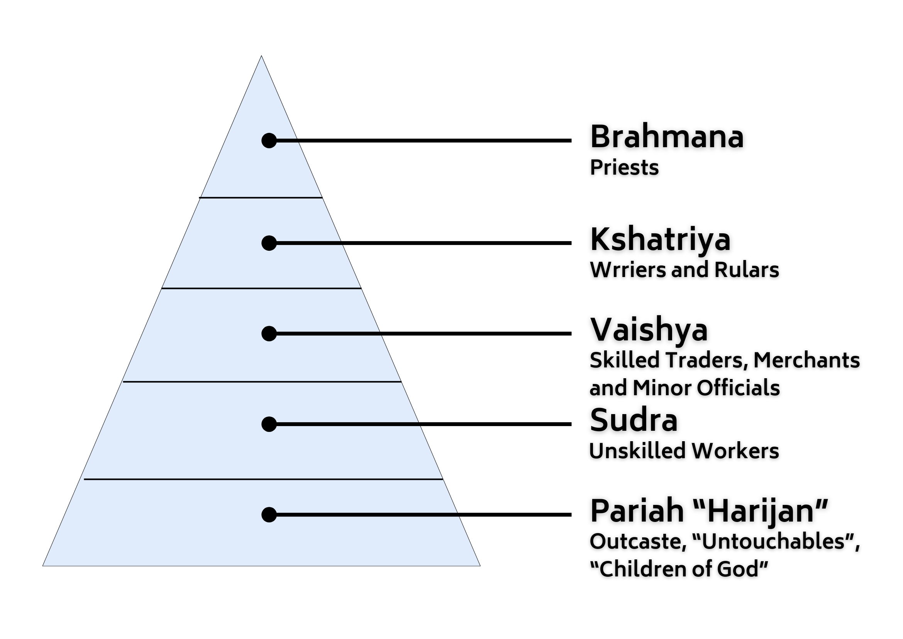
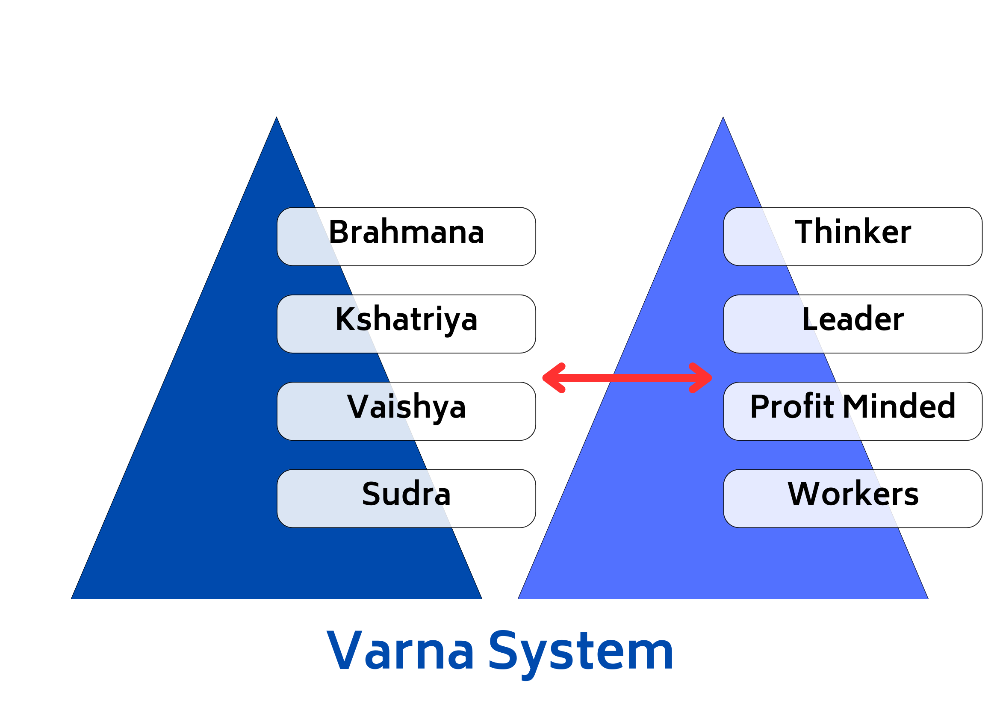
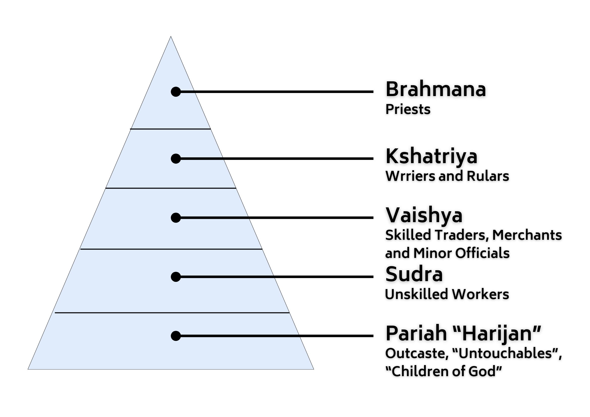
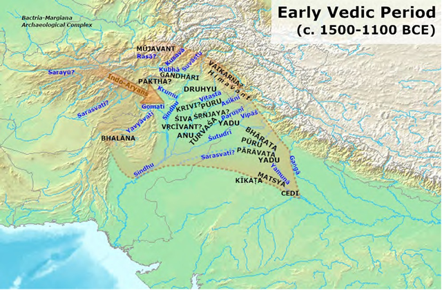
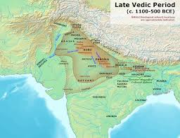

SSC CGL - Vedic Period Guide 2025
Self-Paced Course
Ancient India – Vedic Period
Reference: Lucent GK, NCERT Class 6–12
Timeline
Period
Timeline (Approx)
Region
Early Vedic Age
1500–1000 BCE
Punjab, NW India
Later Vedic Age
1000–600 BCE
Ganga-Yamuna Doab
| Period | Timeline (Approx) | Region |
|---|---|---|
| Early Vedic Age | 1500–1000 BCE | Punjab, NW India |
| Later Vedic Age | 1000–600 BCE | Ganga-Yamuna Doab |
Sources of Vedic History
Vedic Literature (Primary Source)
Category
Texts
4 Vedas
Rigveda, Samaveda,
Yajurveda, Atharvaveda
Brahmanas
Prose texts explaining
rituals
Aranyakas
Forest texts – transition
to Upanishads
Upanishads
Philosophical texts –
foundation of Vedanta
| Category | Texts |
|---|---|
| 4 Vedas | Rigveda, Samaveda, Yajurveda, Atharvaveda |
| Brahmanas | Prose texts explaining rituals |
| Aranyakas | Forest texts – transition to Upanishads |
| Upanishads | Philosophical texts – foundation of Vedanta |
Anguttara Nikaya (Buddhist text) and Panini’s Ashtadhyayi (grammar) also provide insights.
| Veda | Focus |
|---|---|
| Rigveda | Hymns (oldest) |
| Samaveda | Music/Chants |
| Yajurveda | Rituals |
| Atharvaveda | Magic, medicine, daily life |
Detailed Comparison – Early vs. Later Vedic Age
Feature
Early Vedic (Rigvedic)
Later Vedic
Geography
Sapta Sindhu (Punjab,
Afghanistan)
Eastward shift to
Ganga-Yamuna Doab
Economy
Cattle rearing, limited
agriculture
Intensive agriculture, use
of iron tools
Tools
No iron (only
copper/bronze)
Iron (Krishna Ayas) used
extensively
Religion
Nature worship (Indra,
Agni, Varuna)
Ritualism, Brahmanical
dominance
Sacrifices
Simple rituals
Elaborate Yajnas
(Ashvamedha, Rajasuya)
Political
System
Tribal chief (Rajan),
elected
Powerful monarchies,
hereditary kingship
Assemblies
Sabha & Samiti (democratic
institutions)
Declined in importance
Society
Flexible varna system,
women respected
Caste system rigid, women
declined
Education
Oral transmission (Gurukul)
Gurukul + Brahminical
education
| Feature | Early Vedic (Rigvedic) | Later Vedic |
|---|---|---|
| Geography | Sapta Sindhu (Punjab, Afghanistan) | Eastward shift to Ganga-Yamuna Doab |
| Economy | Cattle rearing, limited agriculture | Intensive agriculture, use of iron tools |
| Tools | No iron (only copper/bronze) | Iron (Krishna Ayas) used extensively |
| Religion | Nature worship (Indra, Agni, Varuna) | Ritualism, Brahmanical dominance |
| Sacrifices | Simple rituals | Elaborate Yajnas (Ashvamedha, Rajasuya) |
| Political System | Tribal chief (Rajan), elected | Powerful monarchies, hereditary kingship |
| Assemblies | Sabha & Samiti (democratic institutions) | Declined in importance |
| Society | Flexible varna system, women respected | Caste system rigid, women declined |
| Education | Oral transmission (Gurukul) | Gurukul + Brahminical education |
Religious Developments
Aspect
Detail
Deities
(Rigveda)
Indra (war), Agni (fire),
Varuna (cosmic order)
Soma
Sacred plant used in
rituals
Yajna
Fire sacrifice for pleasing
gods
Later Concepts
Karma, Moksha, Atman,
Brahman – via Upanishads
| Aspect | Detail |
|---|---|
| Deities (Rigveda) | Indra (war), Agni (fire), Varuna (cosmic order) |
| Soma | Sacred plant used in rituals |
| Yajna | Fire sacrifice for pleasing gods |
| Later Concepts | Karma, Moksha, Atman, Brahman – via Upanishads |
Society & Caste System
Early Vedic
- Varna system mentioned, but flexible.
- Example: Purusha Sukta (Rigveda) refers to 4 varnas:
- 1. Brahmana – priests
- 2. Kshatriya – warriors
- 3. Vaishya – traders, herders
- 4. Shudra – servants


Later Vedic
- Caste became hereditary and rigid.
- Women’s position declined:
- Denied education and assembly
- Practices like child marriage and Sati began
- Varna system mentioned, but flexible.
- Example: Purusha Sukta (Rigveda) refers to 4 varnas:
- 1. Brahmana – priests
- 2. Kshatriya – warriors
- 3. Vaishya – traders, herders
- 4. Shudra – servants


Later Vedic
- Caste became hereditary and rigid.
- Women’s position declined:
- Denied education and assembly
- Practices like child marriage and Sati began
Political Structure
Early Vedic
- Rajan (chief) had limited power, aided by Sabha and Samiti
- No standing army


Later Vedic
- Rise of powerful monarchies (e.g., Kuru, Panchala)
- Rajan now performed grand sacrifices to prove authority
- Concepts like Samrat (emperor) emerged
Economy
Feature
Early Vedic
Later Vedic
Currency
Cows = wealth
Barter system + nishka
(gold coin)
Agriculture
Subsistence
Surplus production + plough
use
Occupations
Cattle herding, crafts
Specialization: potters,
smiths, etc.
| Feature | Early Vedic | Later Vedic |
|---|---|---|
| Currency | Cows = wealth | Barter system + nishka (gold coin) |
| Agriculture | Subsistence | Surplus production + plough use |
| Occupations | Cattle herding, crafts | Specialization: potters, smiths, etc. |
Exam-Ready One-Liners (Very High Probability in
SSC CGL)
Question Type
Answer
Oldest Veda
Rigveda
Iron is
referred to as
Krishna Ayas
Main deity of
Rigveda
Indra
Mention of
Varna system
Purusha Sukta in Rigveda
First use of
assembly (Sabha/Samiti)
Early Vedic Period
Ritualistic
dominance started in
Later Vedic Period
Eastward
expansion of Aryans occurred in
Later Vedic Period
| Question Type | Answer |
|---|---|
| Oldest Veda | Rigveda |
| Iron is referred to as | Krishna Ayas |
| Main deity of Rigveda | Indra |
| Mention of Varna system | Purusha Sukta in Rigveda |
| First use of assembly (Sabha/Samiti) | Early Vedic Period |
| Ritualistic dominance started in | Later Vedic Period |
| Eastward expansion of Aryans occurred in | Later Vedic Period |
Developed By Satyam + Jan Mohammad
Next
Start Your SSC CGL Journey Now!
Join Courage Library to experience disciplined study and expert support.
Book Your Slot Now!